Jakie czynniki wpływają na ocenę i oglądalność serialu na podstawie produkcji “Ranczo”?
Metody Pozyskiwania i Wizualizacji Danych
Przygotował: Emil Szewczak
Wstęp
Dynamiczny rozwój przemysłu rozrywkowo-telewizyjnego sprawił, że analiza czynników wpływających na ocenę i oglądalność seriali stała się obszarem szczególnie interesującym dla badaczy. W kontekście polskiej sceny telewizyjnej jednym z fenomenów, który zyskał szczególną popularność i uznanie, jest serial “Ranczo”. Jego trwała obecność w świadomości widzów i kultowy status stawiają go w centrum uwagi, jako obiekt dogłębnej analizy.
Celem niniejszego projektu jest dokładne zbadanie czynników, które przyczyniają się do sukcesów i porażek “Rancza” w kontekście oceny widzów i poziomu oglądalności. Wartościowe wnioski z takiej analizy mogą nie tylko zaspokoić ciekawość badaczy, ale również dostarczyć praktycznych wskazówek dla twórców i producentów serialu oraz innych podmiotów zainteresowanych kreowaniem atrakcyjnych treści telewizyjnych.
Dane wykorzystane do analizy
Dane, które wykorzystałem do analizy, udało mi się zescrapować ze stron Flimweb oraz Wikipedia.
Udało mi się utworzyć 3 ramki danych:
- seazons - 10 obserwacji 6 zmiennych,
- seazons_cast - 74 obserwacji 13 zmiennych,
- episodes - 130 obserwacji 7 zmiennych.
Do pobrania danych wykorzystałem bibliotekę dostępną w R o nazwie rvest.
Seazons
Ta ramka danych zawiera informacje o sezonach serialu. Konkretnie zawiera kolumny:
- Seazon - numer sezonu,
- Rating - średnia ocena sezonu z serwisu Flimweb,
- Votes - liczba głosów, które wpłynęły na ocenę,
- Year - rok wydania,
- Broadcast - godzina premiery telewizyjnej (każdy odcinek w sezonie był transmitowany o tej samej godzinie, każdy odcinek miał premierę w niedziele),
- Viewership - średnia oglądalność odcinków w sezonie na antenie TVP1 w chwili premiery z serwisu Wikipedia.
Seazons_cast
Ta ramka danych zawiera informacje o obsadzie serialu oraz rolach w jakie wcielili się aktorzy w danym sezonie. Konkretnie zawiera kolumny:
- Actor - imię i nazwisko aktora,
- Role - nazwa postaci, w którą wciela się dany aktor,
- Rating - średnia ocena postaci z serwisu Flimweb,
- oraz kolumny ponumerowane od X1 do X10 (nazwy odpowiadają numerom sezonów) z wartościami 1 lub 0 (1 - postać występowała w tym sezonie, 0 - postać nie występowała w danym sezonie).
Episodes
Ta ramka danych zawiera informacje o odcinkach serialu. Konkretnie zawiera kolumny:
- Seazon - numer sezonu,
- Number - numer odcinka,
- Title - tytuł odcinka,
- Rating - średnia ocena odcinka z serwisu Flimweb,
- Votes - liczba głosów, które wpłynęły na średnią ocenę konkretnego odcinka,
- Duration - czas trwania odcinka (wyrażony w minutach),
- Cast - postacie występujące w danych odcinkach (oddzielone znakiem “|”)
Analiza danych dot. sezonów
Poniższy wykres przedstawia średnie oceny (na 10) oraz oglądalność (w mln) poszczególnych sezonów produkcji.
Można z niego odczytać, że pierwsze 4 sezony plasują się w topce średnich ocen i odstają od pozostałych o kilka dziesiątych. Najniżej ocenianym sezonem jest sezon 9, a najwyżej sezony 3 i 4. Zwróćmy uwagę jeszcze na oglądalność. Najwyższą oglądalność miał sezon 4, lecz widać tendencję wzrostową od 1 do 4 części serialu. Z każdy z kolejnych cykli serialu miał już coraz mniejszą oglądalność, najniższą sezon 10.
Warto zauważyć, że sezon pierwszy mimo niskiej oglądalności, ma dość wysokie oceny. Wynika to z tego, że ludzie rzadko zaczynają nowe produkcje na antenie TV. Gdy jednak serial był już dostępny na platformach streamingowych, dotarł on do większej ilości odbiorców (pewnie przez metodę poleceń). Jako że cieszy się dobrymi ocenami nie będę analizował niskiej oglądalności sezonu 1.
Skąd wzrost oceny pomiędzy drugim a trzecim sezonem?
Przeprowadzę analizę porównawczą drugiej i trzeciej części, czego celem będzie znalezienie przyczyn wyższych ocen cyklu trzeciego względem drugiego.
Zacznijmy od tego, że pierwsze 4 sezony były wydawane w odstępach co rok. Każda część składa się z 13 odcinków. Wszystkie odcinki z 4 pierwszych sezonów zostały transmitowane w niedziele o godzinie 20:15. W tych cyklach występowało średnio 32 bohaterów.
Sezony 2 i 3 nie różniły się wielką ilością danych, lecz udało mi się znaleźć dwie znaczące różnice.
Poniższy wykres przedstawia średni czas trwania odcinka w sezonach 2 i 3.
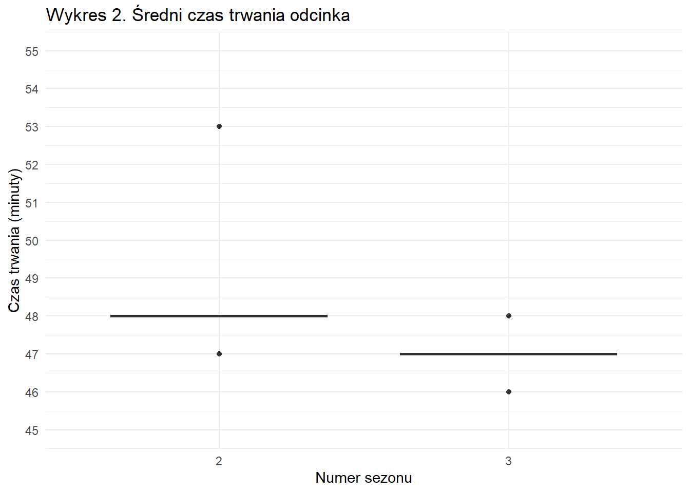
Jak widać, nie zmalała ona o dużo (dokładnie o 1 minutę), ale być może właśnie to wpłynęło na lepsze oceny cyklu trzeciego. Im krócej trwają odcinki, tym mniej czasu poświęcamy na ich oglądanie, więc nie wydają się one nudne.
Poniższy wykres przedstawia osoby, które dołączyły do produkcji w 3 sezonie i osoby, które z niej odeszły po 2 części oraz ocenę ich postaci. Jest także zaznaczona średnia ocena każdej postaci (wynosi ona około: 7.3)
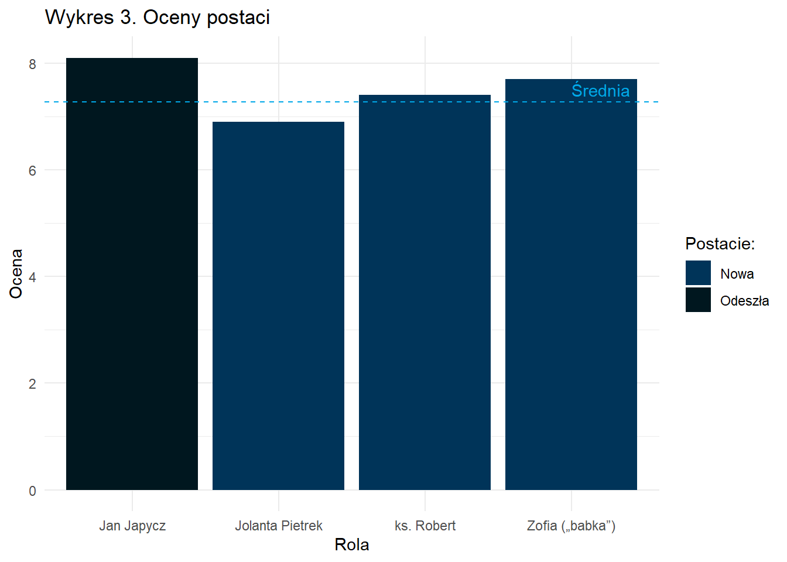
Mimo odejścia z “Rancza” bohatera “Jan Japycz”, który był oceniany najlepiej z przedstawionych postaci, to właśnie pojawienie się 3 nowych osób, a wraz z nimi wątków pozytywnie odbiło się na ocenach serialu. Ważne także, że ci nowi bohaterowie (“Jolanta Pietrek” i “ksiądz Robert”) byli w miarę lubiani. Powrót postaci “Zofii (babki)”, która była jedną z bardziej popularnych i docenianych postaci przez masy, również miał wpływ na oceny. Niestety, śmierć aktora, który grał “Jana Japycza” (Leon Niemczyk), w 2006 roku wpłynęła na brak możliwości pojawienia się jego postaci w kolejnych sezonach.
Poniższy wykres przedstawia liczbę głosów, z których składa się średnia ocena odcinka.
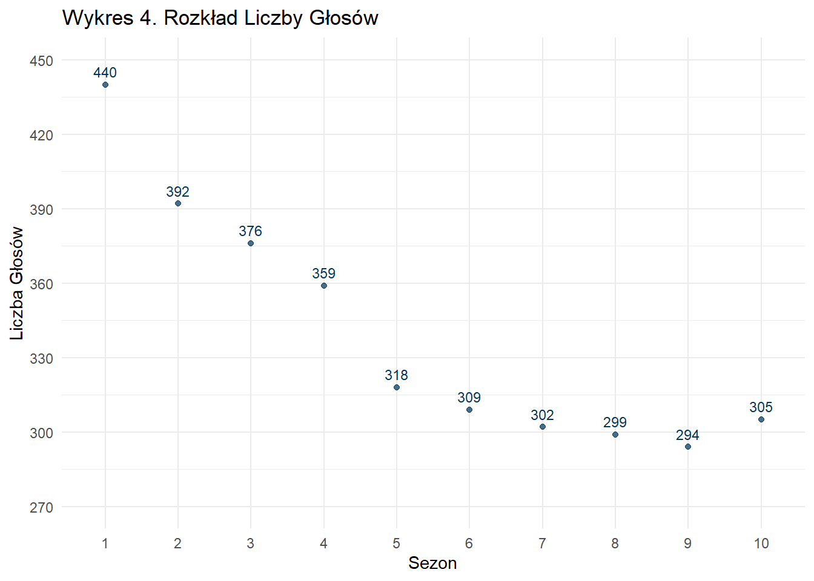
Widać tutaj, że sezony początkowe mają większą liczbę głosów. Może to także wpłynąć na ocenę sezonu 3, ponieważ ludzie decydują się na oglądanie dalej serialu, jeśli podobała im się poprzednia część. Zatem skoro cykl drugi miał więcej głosów, możemy stwierdził, że przyciągną on większą grupę odbiorców do sezonu 3.
Podsumowując tą część analizy, mogę stwierdzić, że istnieje klika czynników, przez które sezon 3 ma lepsze oceny od drugiego. Oto one:
- Spadek średniej długości trwania odcinków,
- Pojawienie się nowych, docenianych bohaterów,
- Powrót postaci, która nie brała udziału w poprzedniej części, lecz jest dobrze znana i lubiana,
- Większe zaangażowanie w poprzedni sezon, przyciąga większą grupę odbiorców.
Skąd wzrost oglądalności między trzecim a czwartym sezonem?
Między trzecią a czwartą częścią serialu “Ranczo” możemy zauważyć wzrost średniej oglądalności na antenie TV prawie o 1.3 mln. Na aż taką różnicę mogło wpłynąć klika czynników. Na pewno duży wpływ na to miał sukces trzeciego cyklu. Oba sezony są średnio oceniane na 8.7, co jest najwyższą oceną względem pozostałych części. Skoro sezon trzeci uzyskał najlepsze opinie, to odbiorcy byli ciekawi, co pojawi się w kolejnej części. Właśnie to może być jeden z powodów tak wysokiej oglądalności sezonu czwartego.
Między tymi cyklami także nie ma zadziwiających różnic. Są one wydawane w stałych odstępach (tak jak poprzednie części co rok). Wszystkie odcinki zostały transmitowane w niedziele o godzinie 20:15. Udało mi się jednak znaleźć kilka mniejszych bądź większych różnic.
Poniższy wykres przedstawia średni czas trwania odcinka w sezonach 3 i 4.
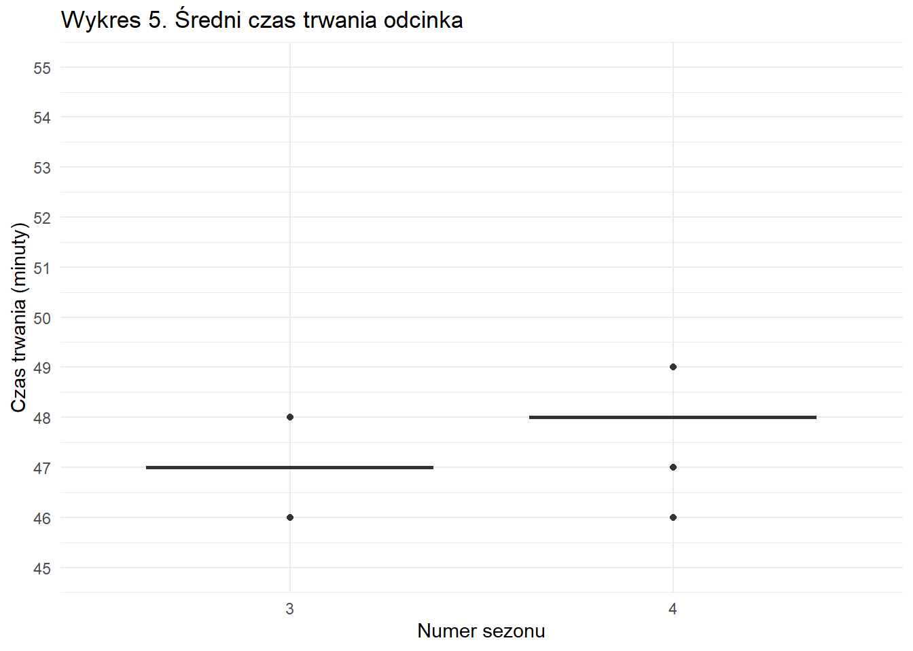
Między tymi sezonami można zauważyć wzrost średniej długości trwania odcinka (także o minutę). Być może to, że sezon 3 cieszy się dobrymi ocenami oraz jest popularnie uważany za jeden z lepszych sezonów, wpłynęło na chęć poświęcenia więcej czasu bohaterom, których znamy i lubimy. Warto też zaznaczyć, że nikt nie opuścił produkcji po 3 cyklu (wszystkie postacie możemy zobaczyć ponownie w kolejnej części).
Poniższy wykres przedstawia bohaterów sezonu 4 oraz ich oceny. Narysowana jest także średnia ocen wszystkich postaci.
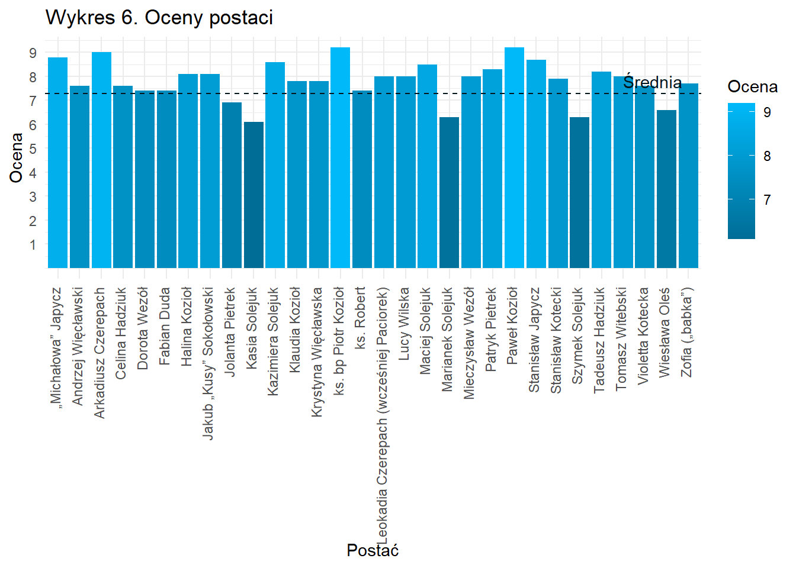
Jak widać na wykresie większość postaci części czwartej “Rancza” jest oceniana powyżej średniej ocen postaci. Są także osoby, które są dosyć nisko oceniane przez widownie. Są to:
- Jolanta Pietrek - postać drugoplanowa
- Kasia Solejuk - postać epizodyczna
- Marianek Solejuk - postać epizodyczna
- Szymek Solejuk - postać epizodyczna
- Wiesława Oleś - postać epizodyczna
Jak widać, żadna z głównych i pierwszoplanowych postaci nie była oceniana poniżej średniej. W takim razie możemy jasno stwierdzić, że widzom podobały się wątki oraz sytuacje, w które byli wplatani bohaterowie. Warto też zaznaczyć, że postacie epizodyczne i drugoplanowe niemal w każdej produkcji są niżej oceniane niż główna obsada. Pojawili się oni tylko na kilka minut na przełomie całego sezonu, więc ich obecność nie miała aż takiego wpływu na oglądalność serialu.
Podsumowując tą część analizy, mogę stwierdzić, że jest klika powodów przez które sezon 4 ma wyższą oglądalność względem części trzeciej. Oto one:
- Sukces trzeciego cyklu (dobre oceny) przyciągnął większą grupę odbiorców docelowych,
- Utrzymanie znanych i lubianych bohaterów z poprzedniej części jest powodem, przez który nie trzeba wkładać wielkiego zaangażowania w poznanie postaci (wszystkich dobrze już znamy),
- Brak nowych, mniej lubianych postaci.,
- Zwiększenie długości odcinków po sukcesie poprzedniej części (widzowie chcą spędzać więcej czasu z ulubionymi postaciami).
Skąd taki spadek w oglądalności i ocenach między czwartym a piątym cyklem?
Jak już wiemy, z poprzedniej części analizy cykl czwarty produkcji ma najwyższą oglądalność, ale także najwyższe oceny. Natomiast kolejna część ma już ocenę niższą o klika dziesiątych a oglądalność aż o 1.6 mln. Co wpłynęło na taki obrót sytuacji?
Poniższy wykres przedstawia lata, w których były wydawane kolejne części produkcji, wraz z ocenami i oglądalnością, w konkretnych latach.
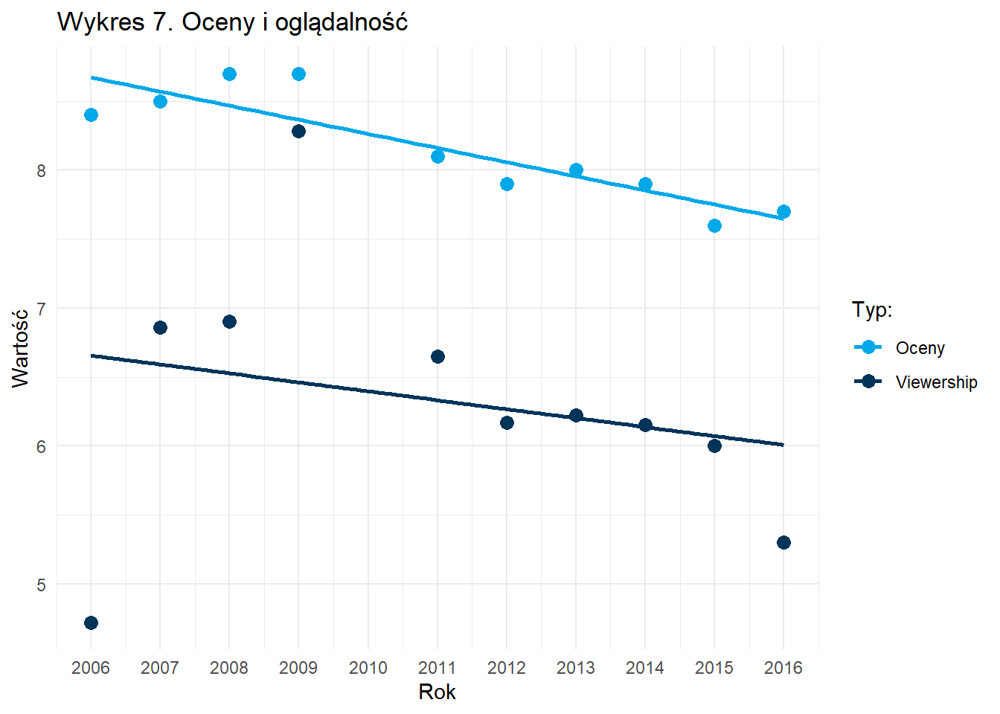
Jak widać na powyższym wykresie w 2010 roku nie było nowego sezonu serialu. Przerwa w produkcji mogła wpłynąć na spadek oglądalności i ocen w kolejnym sezonie.
Poniższy wykres przedstawia w jaki sposób zmiana godziny transmisji odcinków serialu wpłynęła na oceny i oglądalność produkcji.
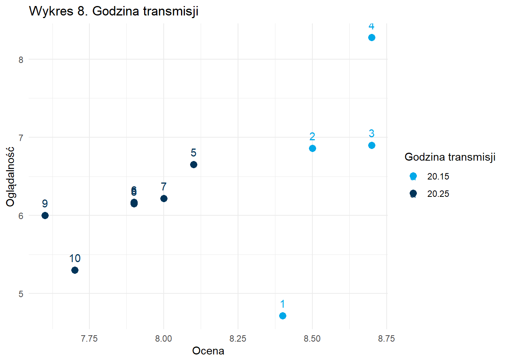
Jak widać na powyższym wykresie, sezony, które były transmitowane o godzinie 20:15, czyli 4 pierwsze części produkcji mają wyższe oceny od pozostałych. Mają też one większą średnią oglądalność.
Zmiana godziny transmisji produkcji mogła wpłynąć na oglądalność i oceny. Być może taka zmiana kolidowała z innymi serialami i odbiorcy byli zmuszani dokonywać wyboru między “Ranczem” a innym serialem.
Poniższy wykres przedstawia osoby, które dołączyły do produkcji w 5 sezonie oraz ocenę ich postaci. Jest także zaznaczona średnia ocena każdej postaci (wynosi ona około: 7.3)
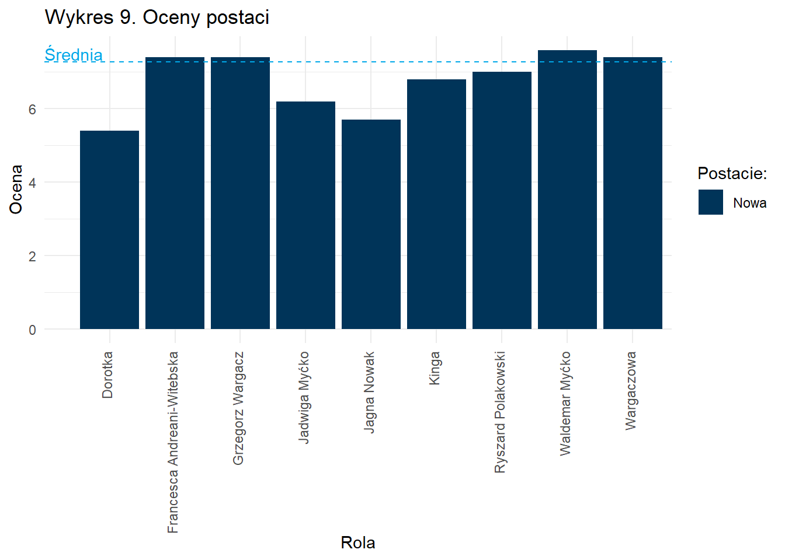
Mimo pojawienia się dziewięciu nowych postaci (są one głownie pierwszo i drugoplanowe), żaden ze znanych bohaterów nie odszedł z produkcji. Wprowadzenie tylu nowych postaci wymaga od widzów zaangażowania w poznanie tych bohaterów i przyzwyczajenie się do nich. Gdy sezon 4 był sukcesem należało się trzymać dobrej formy i nie wprowadzać aż tylu zmian.
Jak widać ci nowi bohaterowie nie są zbyt lubiani przez widzów. Tylko 4 z dziewięciu postaci jest oceniana ponad średnią ocenę. Dlatego wprowadzenie tylu bohaterów, którzy mają niskie oceny nie jest dobre ze względu na oceny i oglądalność sezonu piątego.
Poniższy wykres przedstawia średni czas trwania odcinka w sezonach 4 i 5.
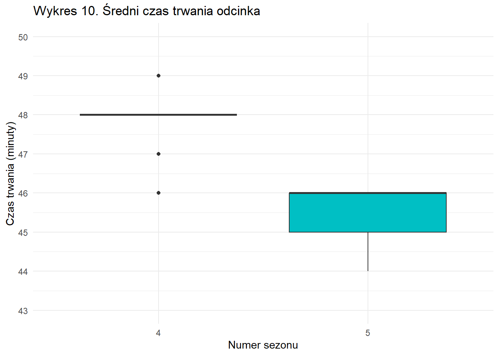
Między tymi sezonami można zauważyć spadek średniej długości trwania odcinka (o 2 minuty). Mimo wprowadzenia tylu nowych postaci także zmniejszono czas trwania odcinków, co powoduje, że ciężko jest poznać i polubić te nowe postacie. Taki spadek w długości trwania odcinków mógł też wpłynąć na zwiększenie bloków reklamowych. Dłuższe reklamy także powodują frustrację u odbiorców, także stąd może wynikać spadek w oglądalności.
Podsumowując tą część analizy, mogę stwierdzić, że istnieje klika czynników przez które sezon 5 ma gorsze oceny i oglądalność względem czwartej części. Oto one:
- Dwa lata przerwy między sezonem 4 a 5 (jedyna przerwa tej długości) spowodowała, że widzowie mogli zapomnieć o produkcji, przez co ciężej było im do niej wrócić,
- Zmiana godziny transmisji odcinków Rancza, przez co mogły one kolidować z innymi produkcjami (widzowie musieli dokonać wyboru, który serial obejrzeć),
- Wprowadzenie wielu nowych postaci (utrata klimatu poprzedniej części, która była najlepiej oceniana i miała największą oglądalność),
- Skrócenie długości trwania odcinków, przez co ciężko było poznać i polubić nowe postacie,
- Zwiększenie długości bloków reklamowych, co powoduje frustracje u odbiorców i chęć zmiany kanału telewizyjnego.
Dlaczego ostatnie sezony są oceniane najgorzej i mają najmniejszą oglądalność?
Jak widać na wykresie 1 (Oceny i oglądalność sezonów) oraz na wykresie 7 (Oceny i oglądalność w latach) im późniejszy sezon, tym mniejsze oceny i oglądalność.
Jak widać na wykresie 8 (Godzina transmisji) została zmieniona godzina emisji odcinków od sezonu piątgo na 20:25. O efektach takiej zmiany wspominałem wcześniej.
Może to wynikać z tego, że produkcja “Ranczo” ma specyficzną fabułę. Opowiada ona o zmianach wsi ze względu na czynniki zewnętrzne. Być może wraz ze zmianą czasów taka fabuła stała się nierealna, zatrzymana w czasie, przez co mniej atrakcyjna dla odbiorców. Serial miał aż 10 sezonów, jest to dosyć dużo jak na Polską produkcję, lecz właśnie taka długość mogła powodować zmęczenie takim samym formatem i wątkami.
Dodatkowo w późniejszych sezonach zmienił się klimat produkcji. Zmienili się bohaterowie, wątki a także fabuła, więc produkcja straciła klimat z pierwszych części.
Poniższy wykres przedstawia 10 najgorzej ocenianych postaci wraz z podpisem, w którym sezonie pojawili się po raz pierwszy.
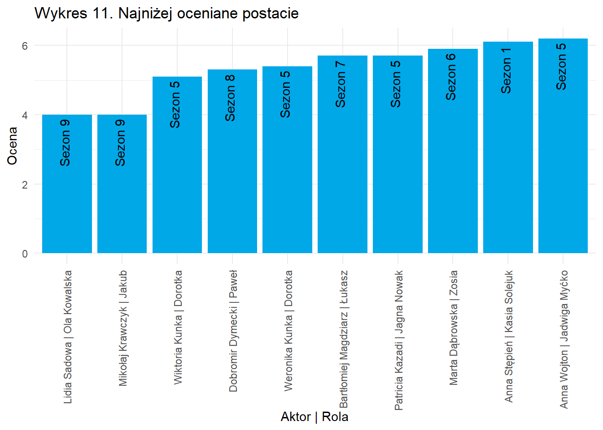
Jak widać na powyższym wykresie najgorzej oceniane postacie głównie pojawiły się pierwszy raz w sezonach 5-9 (z wyjątkiem Kasii Solejuk, która jest postacią epizodyczną od pierwszego sezonu). Przez wprowadzenie wielu nowych postaci serial stracił swój klimat z poprzednich części. Wprowadzone postacie także były postrzegane przez odbiorców jako mniej lubiane, gorsze od innych postaci, co wpłynęło na gorszą oglądalność i oceny ostatnich sezonów.
Poniższy wykres przedstawia średni czas trwania odcinka w sezonach od 4 do 10.
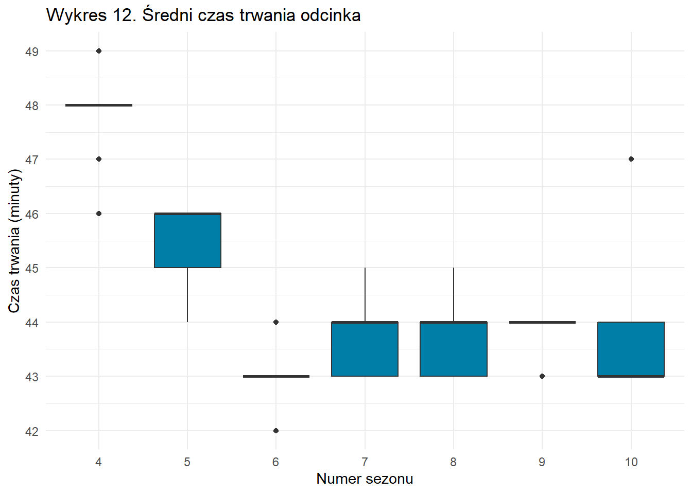
Między tymi sezonami można zauważyć spadek średniej długości trwania odcinka. O efektach zmniejszonego czasu odcinka pisałem już kilka razy. To samo dotyczy się tego wykresu.
Z każdym sezonem te czynniki coraz bardziej wpływały na gorsze oceny i oglądalność.
Najlepsze i najgorsze odcinki
Poniższy wykres przedstawia 5 najlepiej i 5 najgorzej ocenianych odcinków, wraz z zaznaczoną średnią oceną wszystkich odcinków (wynosi ona około 8.3).
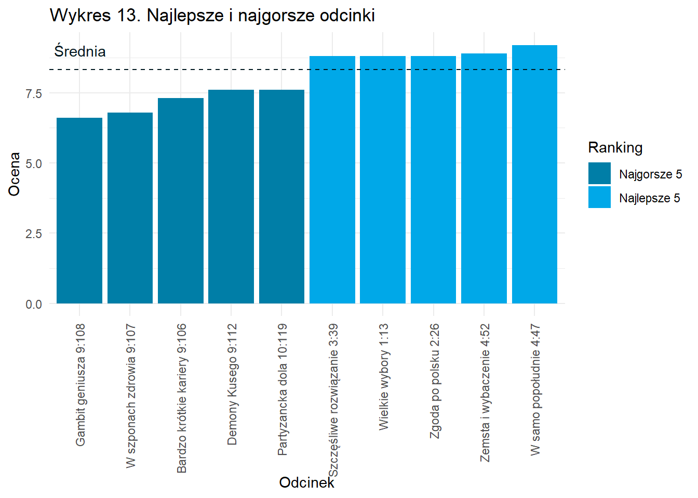
Jak widać na wykresie najgorsze odcinki są z 2 ostatnich sezonów, a najlepsze są w pierwszych czterech częściach produkcji. Potwierdzają to oceny poszczególnych sezonów (początkowe sezony są lepiej oceniane niż końcowe).
Poniższy wykres przedstawia 5 najkrótszych i 5 najdłuższych odcinków, wraz z zaznaczoną średnią długością trwania odcinka (wynosi ona około 45 minut). Ma także podpisaną ocenę każdego odcinka.
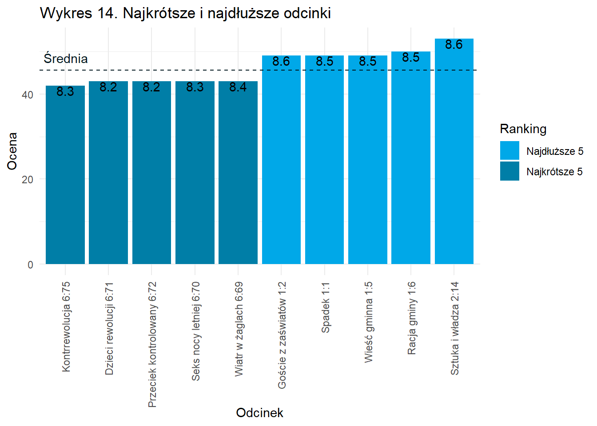
Jak widać na powyższym wykresie odcinki, które trwają najkrócej (są z sezonu 6) są także niżej oceniane. Odcinki które trwają dłużej, maja lepsze oceny i są one głównie z sezonu 1 i 2. Potwierdza to także wniosek, że dłuższe odcinki są lepiej oceniane od krótszych.
Poniższy wykres przedstawia 5 odcinków z najmniejszą i największą liczbą głosów, które wpływają na średnią, wraz z zaznaczoną średnią liczbą głosów (wynosi ona około 443 głosy). Ma także podpisaną ocenę każdego odcinka.
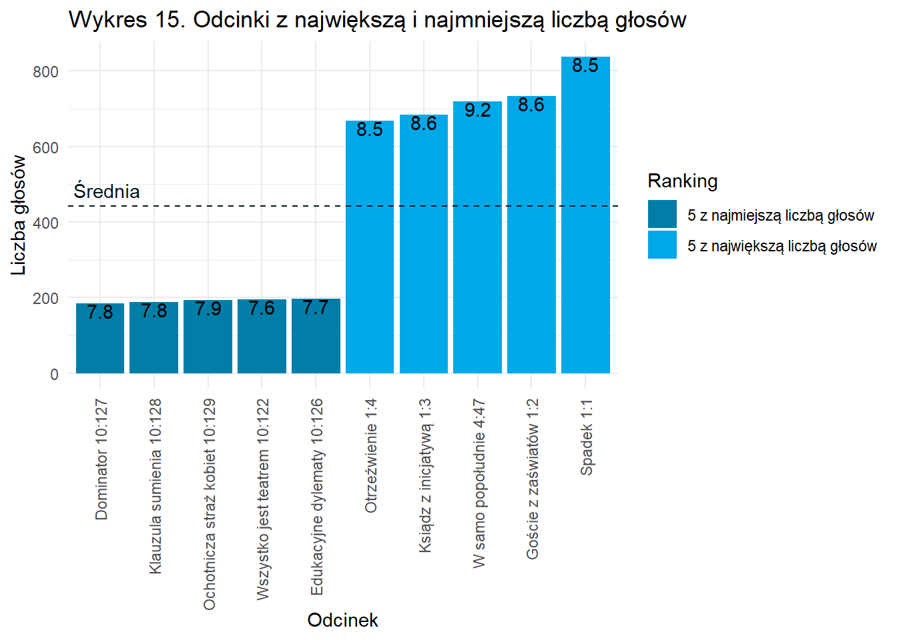
Jak widać na powyższym wykresie odcinki z większą liczbą głosów mają lepsze oceny niż odcinki z małą liczbą głosów. Dodatkowo najwięcej głosów mają odcinki z sezonu 1 i 4 (bardzo dobrze oceniane sezony), a najmniej z sezonu 10 (jeden z gorzej ocenianych sezonów). Sezon 10 ma też najniższą oglądalność, więc z tego może wynikać niska liczba ocen.
Podsumowanie
Analiza sezonu 4 wskazuje na kilka kluczowych czynników, które przyczyniły się do jego sukcesu w porównaniu z sezonem 3. Przyciągnęło to większą grupę odbiorców docelowych, głównie dzięki sukcesowi poprzedniego cyklu, dobrym ocenom oraz utrzymaniu znanych i lubianych postaci. Warto zauważyć, że zwiększenie długości odcinków po sukcesie poprzedniej części pozwoliło widzom spędzać więcej czasu z ulubionymi bohaterami.
Natomiast analiza sezonu 3 sugeruje, że kilka czynników przyczyniło się do lepszych ocen w porównaniu z sezonem 2. Spadek średniej długości trwania odcinków, pojawienie się nowych, docenianych postaci, powrót dobrze znanej postaci z poprzednich sezonów oraz większe zaangażowanie w poprzednią serię przyciągnęły większą grupę odbiorców.
Niestety, sezon 5 zanotował spadek oglądalności i ocen w porównaniu z sezonem 4. Przerwa dwóch lat między sezonami, zmiana godziny transmisji, wprowadzenie wielu nowych postaci, skrócenie długości trwania odcinków i zwiększenie długości bloków reklamowych przyczyniły się do tego spadku. Widzowie mogli zapomnieć o produkcji, a zmiany w formule serialu mogły wpłynąć negatywnie na jego klimat i atrakcyjność.
Co powinni zrobić twórcy, aby poprawić oceny i oglądalność serii?
Kontynuacja sukcesów poprzednich sezonów:
Analiza sezonu 4 wskazuje na sukces wynikający z dobrych ocen poprzednich cykli. Warto zatem skoncentrować się na zachowaniu elementów, które przyciągnęły pozytywne opinie widzów, takich jak solidny scenariusz, dobrze skonstruowane postacie i ciekawa fabuła.
Kontynuacja wątków, które zdobyły popularność w poprzednich sezonach, może zbudować kontynuację zainteresowania widzów.
Zachowanie ulubionych postaci:
- Znane i lubiane postacie są jednym z kluczowych elementów przyciągających widzów. Staranność w utrzymaniu równowagi między znanymi postaciami a wprowadzeniem nowych, fascynujących postaci, może przynieść korzyści, zachowując jednocześnie tożsamość serialu.
Regularność i komunikacja:
- Unikanie długich przerw między sezonami może być kluczowe dla utrzymania zainteresowania widzów. Komunikacja z fanami poprzez media społecznościowe, zapowiedzi, za kulisami, czy relacje z planu, może utrzymać aktywność społeczności i budować napięcie przed premierą.
Dopasowanie godzin transmisji:
- Analiza konkurencji i wybór optymalnych godzin transmisji może pomóc w unikaniu kolizji z innymi popularnymi produkcjami, co z kolei zwiększy szanse na przyciągnięcie większej widowni.
Długość odcinków i reklam:
- Uważne dostosowanie długości odcinków do potrzeb fabuły i oczekiwań widzów jest kluczowe. Skrócenie długości bloków reklamowych oraz zminimalizowanie przerywania narracji mogą poprawić doświadczenie oglądania i zniwelować frustracje widzów.
Innowacje w narracji:
- Eksperymentowanie z nowymi kierunkami w fabule, niespodziewane zwroty akcji lub wprowadzenie elementów niespotykanych wcześniej mogą przyciągnąć uwagę widzów i utrzymać ich zainteresowanie.
Zaangażowanie widzów:
- Stworzenie interaktywnych kampanii marketingowych, konkursów czy platform do dyskusji online może zaangażować widzów w sposób, który wykracza poza samą emisję serialu.
Dziękuję za zapoznanie się z projektem.
Przygotował: Emil Szewczak
Przygotowano na zajęcia z Metod Pozyskiwania i Wizualizacji Danych